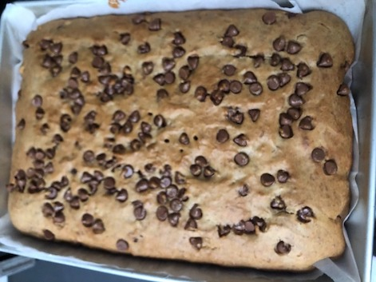

Eggless Banana Walnut ChocolateChip Cake

Description
Eggless Banana Walnut ChocolateChip cake will have a nice aroma of
cinnamon flavor. If you are a cinnamon lover,
you will definitely love this recipe.
Now let's dive into the ingredients that are needed for this amazing and
wonderful eggless banana walnut chocolate chip cake.
Ingredients
- 4 ripened bananas
- 3 cups of all purpose flour
- 1 cup of brown sugar
- 1 tsp of vanilla essence
- 1 tsp of baking powder
- 1 tsp of baking soda
- 1/2 tsp of cinnamon powder
- a pinch of salt
- 1 cup of milk
- 1 cup of vegetable oil
- 1/2 cup of chopped walnuts
- 1/2 cup of chocolate chips
- 1 -- 9x13 baking pan
Steps
- In a bowl add the 4 ripened bananas and smash it with fork very well
- To this add brown sugar, vegetable oil and beat it well until it is smooth
- Add vanilla essence and milk and mix thoroughly
- Now add all the dry ingredients: all purpose flour, baking powder, baking soda, cinnamon powder and salt to the mixture
- Mix well and there should not be any lumps
- If the mixture is too tight, you can add 2 tbsp of milk
- Time to add walnuts and chocolate chip and fold gently
- Pour it on the greased pan and bake it in 350 F for 25-30 mins
- Your cake is ready!